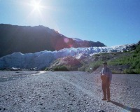
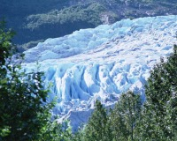
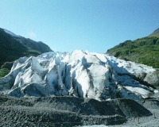

 |
エグジット氷河を望む。丁度ここが最先端で、川に削り落とされているような感じになっています。この時期川に水はほとんどありません。 |
|
綺麗なグレーシャー・ブルーです。良く見ると顔にも見れます。 |
 |
 |
氷河の終点。砂で汚れています。 |
スワードまで来たら、ここに寄らない人は居ないでしょう。夏以外は途中にとうせんぼしてあって近づけませんが、遠くから眺めることはできます。(この場合双眼鏡が欲しい)
道は硬く閉まっており、普通の乗用車でアクセスできます。レンタカーは、未舗装路上の事故では保険出ませんから慎重に運転すること。
Written : 2004.04.07